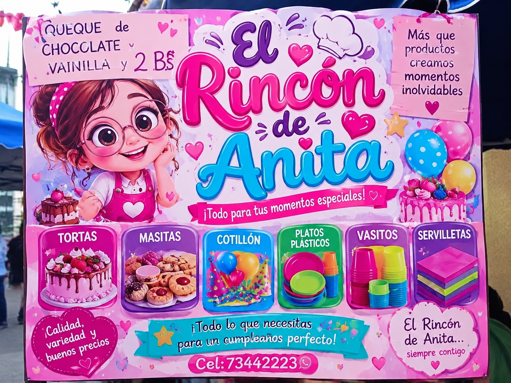

TRABAJO PRÁCTICO
Feria de Emprendimientos
Estudiante: Jasmin Araceli Salva Gutierrez
Carrera: Sistemas Informáticos
Institución: ITSEC Sucre
Materia: Diseño Web
Gestión: 2026
Objetivo del trabajo
Conocer diferentes emprendimientos, identificar los productos y servicios que ofrecen y compartir sus experiencias mediante fotografías y entrevistas.
STAND 1
Nombre del emprendimiento: MATES DE PLANTAS
Emprendedora: María Fernanda
Dirección: Sucre, Bolivia.
Productos o servicios: Venta de mates e infusiones de plantas naturales como manzanilla, menta, boldo, toronjil, eucalipto, cedrón y jengibre.
Contacto: WhatsApp: 71152487.
Descripción: MATES DE PLANTAS es un emprendimiento dedicado a la venta de infusiones naturales elaboradas con diferentes plantas. Su objetivo es ofrecer productos naturales y agradables para las personas que disfrutan de los mates. Se caracteriza por utilizar una variedad de hierbas y brindar una alternativa tradicional para acompañar los momentos de descanso. Su lema es: “Naturales, saludables y llenos de beneficios”.
Logotipo del emprendimiento
Fotografías del stand
Video de entrevista
STAND 2
Nombre del emprendimiento: QUESILLÍSIMO
Emprendedor: Juan Carlos
Dirección: Sucre, Bolivia.
Productos o servicios: Venta de quesillos, flanes y deliciosos postres caseros.
Contacto: Atención WhatsApp:73436691 contacto directo con el emprendimiento.
Descripción: QUESILLÍSIMO es un emprendimiento dedicado a la elaboración y venta de postres, ofreciendo productos dulces y deliciosos para satisfacer los gustos de sus clientes. Se caracteriza por su presentación atractiva, su sabor agradable y su dedicación en cada preparación. Su lema es “Una dulce adicción”, buscando brindar una experiencia dulce y especial a las personas que disfrutan de los postres.
Logotipo del emprendimiento
Fotografías del stand
Video de entrevista
STAND 3
Nombre del emprendimiento: EL RINCÓN DE ANITA
Emprendedora: Anita
Dirección: Sucre, Chuquisaca, Bolivia.
Productos o servicios: Venta de tortas, queques de chocolate y vainilla, masitas, artículos de cotillón, platos plásticos, vasitos, servilletas y otros productos para cumpleaños y celebraciones.
Contacto: WhatsApp: 73442223.
Descripción: El Rincón de Anita es un emprendimiento dedicado a la venta de productos para cumpleaños, fiestas y acontecimientos especiales. Ofrece una variedad de tortas, masitas y artículos necesarios para organizar celebraciones. Se caracteriza por brindar variedad de productos, buena presentación y precios accesibles, buscando satisfacer las necesidades de sus clientes y ayudarles a disfrutar de momentos especiales. Su lema es: “¡Todo para tus momentos especiales!”.
Logotipo del emprendimiento
Fotografías del stand
